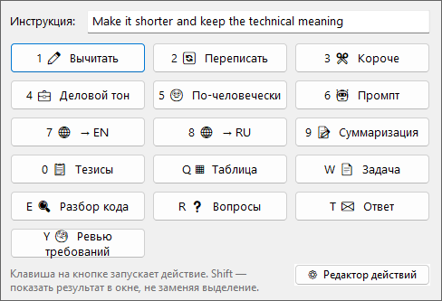
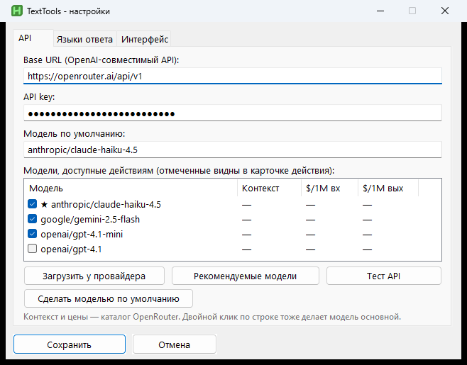
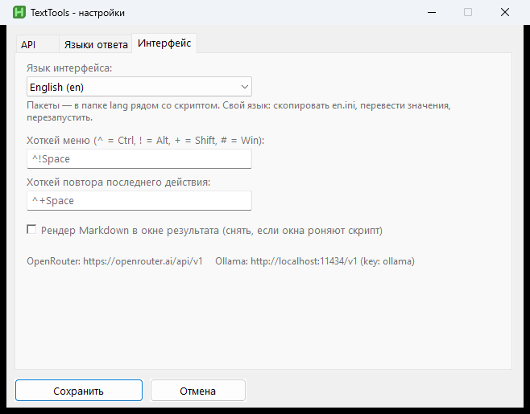
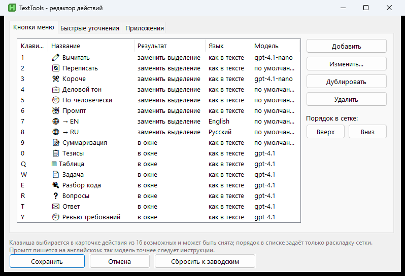
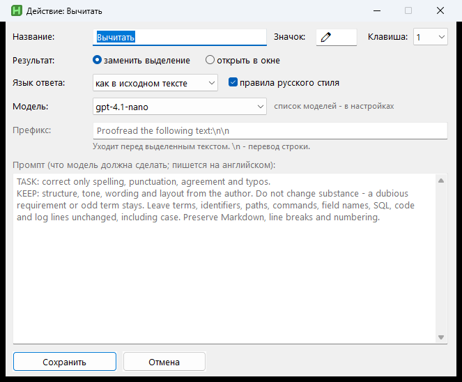

Action grid and accelerators
Proofread, rewrite, business tone, summarize, key points, table, spec, code explain, questions and reply drafts — with keys 1–0 and Q–Y.
AutoHotkey v2 · LLM on selected text
Select text in any Windows app, press a hotkey, and choose an action: proofread, rewrite, summarize, table, code explain, and more. The result replaces the selection or opens in a Markdown window.
It stays a local AutoHotkey script: state and API key on your machine; only the text for the chosen action is sent to your model.
Proofread, rewrite, business tone, summarize, key points, table, spec, code explain, questions and reply drafts — with keys 1–0 and Q–Y.
OpenRouter, OpenAI, Anthropic proxies, local Ollama and other `/v1/chat/completions` endpoints. Default model plus per-action override.
Buttons and prompts are editable from the tray. Profiles hint the model when text comes from an IDE, mail, spreadsheet or tracker.
Action grid on hotkey, API settings, prompt editor and result window — all from the Windows tray.





One hotkey covers form fixes, meaning rewrites and structured requirement analysis.
proofreadFix form, keep meaningrewriteClarity for engineerssummaryCompress for actiontableMarkdown tablespecDev-ready specificationcodeExplain a code fragmentreplyDraft a replyreqreviewRequirements reviewQuick start
You need AutoHotkey v2 and system curl.exe. install.ps1 copies files to %LOCALAPPDATA% and registers autostart.
Open install guidewinget install -e --id AutoHotkey.AutoHotkey
git clone https://github.com/BelyaevAD/TextTools.git
cd TextTools
powershell -ExecutionPolicy Bypass -File .\install.ps1
# Then: tray → Settings → API keyThe API key lives only in local TextTools.ini. On-disk history contains your texts — do not commit it.